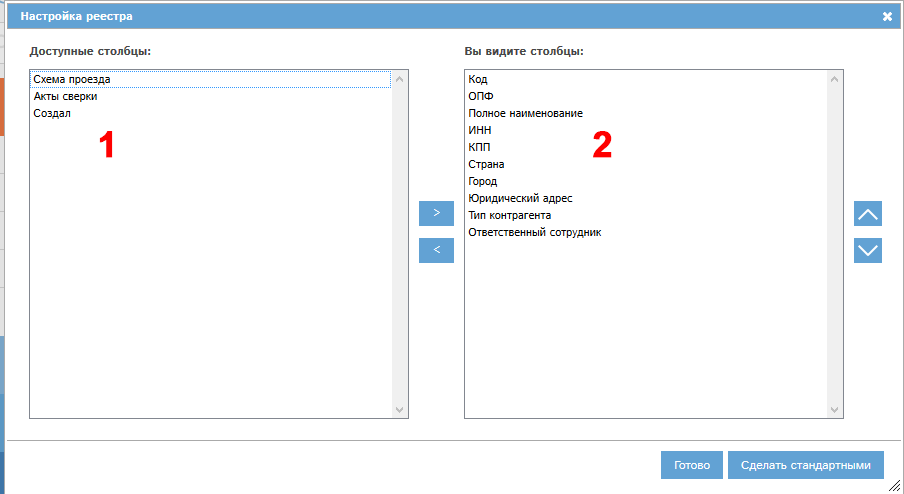

Рассмотрим работу кнопки
Список доступных Вам командировок находится в разделе "Планировщик", на вкладке "Командировки":
Рис. Реестр командировок.
Наиболее важные графы реестра:
Аналогично прочим реестрам CRM GYDEX, доступна поиск и сортировка по определенным полям.
Для создания новой командировки необходимо нажать кнопку "Создать событие" над реестром. Откроется окно создания события:
Также Вы можете нажать кнопку "Новая командировка" на странице "Быстрые действия".
Рис. Окно создания события планировщика.
В окне необходимо отметить пункт "Командировку", затем нажать ОК. Откроется форма создания командировки:
Рис. Форма создания командировки.
Блок 1: Дата и время начала, дата и время окончания командировки - необходимо указать эти данные для командировки. По умолчанию выбрано сегодня и текущее время.
Блок 2: командировка совершенная/запланированная: в зависимости от времени и даты, выбранных в блоке 1, блок 2 выбирается автоматически. Если командировка была в прошлом, то блок принимает значение "командировка совершенная", иначе - "командировка запланированная".
Блок 3: сотрудник. В этом поле необходимо выбрать сотрудника, который был направлен в командировку. По умолчанию выбраны Вы. Если требуется выбрать другого сотрудника, необходимо нажать кнопку "..." в этом блоке и осуществить выбор.
Блок 4: город командировки. С помощью кнопки "Добавить город..." необходимо выбрать город, в котором проводится командировка. Город выбирается из справочника городов программы. Можно выбрать несколько городов.
Блок 5: контрагент командировки. После выбора города в блоке 4 необходимо выбрать контрагента и контакта, с которым проводилась командировка. Для выбора нажмите кнопку "Добавить контрагента...". Выбор проводится из справочника контрагентов и их контактов в программе.
Если командировка создается как запланированная, то в этом блоке необходимо указать цель командировки.
В блоке 5 также указываются результат командировки. Результат указывается отдельно для каждого контрагента. Если в ходе командировки встречи с каким-либо контрагентом не проводилось, необходимо отметить для него галочку "не встречался".
Блок 6: Напомнить мне. Позволяет создать напоминание о командировке в выбранный период.
Кнопка "Создать командировку" (7) позволяет создать командировку и перейти в реестр командировок.
Кнопка "Создать командировку и остаться в карте" (8) позволяет создать командировку и остаться в ее карте.
Кнопка "Отмена" (9) - закрытие формы без сохранения данных в программе.
Заполним все указанные блоки. Карта командировки примет вид:
Рис. Карта командировки заполнена.
Нажмем "Сохранить командировку и остаться в карте" (10). Откроется форма просмотра/редактирования командировки.
Рис. Карта командировки.
В нашем примере командировка сохранена как запланированная, поэтому она перешла в статус "запланирована" (1), и у нее автоматически утверждено заполнение (3).
Если командировку сохранили бы как совершенную, то она перешла бы в статус "выполнена", и у нее автоматически утвердилось бы выполнение (4).
Когда у командировки утверждено заполнение (3), то активными остаются поля "напомнить мне" (2) и "результат командировки". Все остальные поля неактивны. Если необходимо скорректировать в них данные, то нужно снять утверждение заполнения командировки.
У карты с утвержденным заполнением становятся активными кнопки (получить печатную форму в pdf-формате) и  (отправить печатную форму в pdf-формате на электронную почту).
(отправить печатную форму в pdf-формате на электронную почту).
Рассмотрим работу кнопки  . При ее нажатии откроется окно выбора адресата:
. При ее нажатии откроется окно выбора адресата:

Рис. Окно выбора адресата.
Для отправки печатной формы на электронную почту необходимо отметить галочками требуемые адреса сотрудников и нажать кнопку "Готово".
Утвердим выполнение нашей командировки. Заполним поля "Результат" для каждого контрагента командировки, т.к. без его заполнения программа не позволит утвердить выполнение.
Затем отметим галочку "Утверждаю выполнение" и нажмем "Сохранить и остаться". Форма примет вид:
Рис. Выполнение утверждено.
Командировка перешла в статус Выполнен. Все поля недоступны для заполнения.
Для командировок в статусе "Запланирован" (т.е. командировки, у которых утверждено заполнение, но не утверждено выполнение) доступна функция напоминаний. Вы можете установить себе напоминание об этой командировке.
Для этого в карте командировки нужно отметить галочку "напомнить мне", указать дату напоминания и время напоминания, и затем сохранить карту:
Рис. Установка напоминания о командировке.
В указанное Вами время Вы получите в программе напоминание о командировке:
 Рис. Напоминание о командировке.
Рис. Напоминание о командировке.
В окне напоминания можно выбрать дальнейшие действия:
При выборе вариантов 1-2 нужно нажать кнопку Готово в окне напоминания.
Если Вы устанавливаете напоминание при первичном создании командировки, то напоминания в выбранное вами время будут приходить сотруднику, выбранному в блоке "Сотрудник" карты командировки.
Все основные реестры программы могут быть индивидуально сконфигурированы: вы можете указать, какие колонки и в какой последовательности вы желаете видеть. Всегда можно вернуться к стандартному виду реестра. Рассмотрим работу этой функции на примере реестра контрагентов.
Для настройки реестра нажмите кнопку  :
:

Откроется окно настройки. Слева указаны доступные колонки (1), справа - колонки, которые показаны в реестре (2):

Для перемещения столбцов между блоками 1 и 2 выделите требуемые столбцы (можно выделить несколько столбцов, нажав и удерживая ctrl при их выделении), и нажмите кнопку > для перемещения столбцов из доступных в видимые, либо кнопку < для перемещения из видимых в доступные столбцы.
Доступна сортировка видимых столбцов (в блоке 2). Для того, чтобы поднять или опустить столбец или их группу, выделите требуемые столбцы и нажмите  для подъема или
для подъема или  для спуска столбца.
для спуска столбца.
Для того, чтобы сохранить внесенные изменения, нажмите Готово. Реестр обновится, и будут показаны выбранные вами столбцы в выбранной вами последовательности.
Для того, чтобы восстановить стандартный вид реестра, нажмите кнопку "Сделать стандартными".